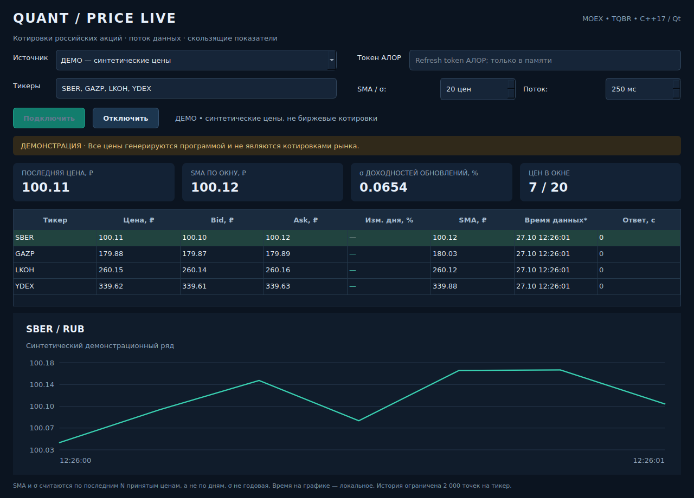

Это приложение с обычным окном Windows: таблица акций, график и настройки. CSV не требуется. Можно смотреть интернет-котировки MOEX ISS без ключа, подключить поток АЛОР с токеном или проверить интерфейс в демонстрации. Все исходники, тесты, CMake, benchmark, Doxygen и CI/CD входят в комплект.
Важное различие источников:
| Источник | Что нужно | Что показывает |
|---|---|---|
| АЛОР | Боевой аккаунт и Refresh token | Подписки на поток котировок российских акций |
| MOEX ISS | Только интернет | Реальные биржевые данные, доступные с задержкой |
| ДЕМО | Ничего | Синтетические цены для знакомства с окном |
Использование OpenAPI АЛОР заявлено бесплатным в FAQ брокера. Для реального потока одной регистрации разработчика недостаточно: нужен торговый аккаунт. Условия брокерского обслуживания проверяются отдельно. Тестовый контур передаёт симуляционные данные; в этом приложении он не используется.
В исходном архиве нет готового Windows EXE. Его автоматически создаст GitHub Actions. Это позволяет получить приложение без установки C++ и Qt на собственный компьютер. Windows-пакет пока не собран в вашем аккаунте — это нужно сделать по разделу 2.
+ → New repository. Имя quant-price-live, видимость Public.
Включите создание README, затем Create repository.Add live C++ Qt application, затем Commit changes в main..github/workflows/ci.yml.
Если .github не загрузилась, Add file → Create new file → имя .github/workflows/ci.yml,
вставьте точное содержимое файла из комплекта и сохраните.Если приложение сообщает об отсутствии VCRUNTIME/MSVCP, установите официальный Microsoft Visual C++ Redistributable x64: https://aka.ms/vs/17/release/vc_redist.x64.exe
Сборка не подписана сертификатом издателя. При предупреждении Windows сверяйте происхождение файла с вашим собственным workflow, а не скачивайте заменяющие DLL с сайтов.
Если репозиторий уже создан для первой версии, можно использовать его. Скопируйте новые файлы поверх рабочей копии, обновите README и workflow. Старые src/main.cpp, src/csv.cpp и data/prices.csv больше не используются и их можно удалить. Если имя осталось quant-price-lab, ссылка Pages должна содержать quant-price-lab. Для работы через GitHub Desktop см. раздел 8.
Демо явно подписано: это не реальные цены акций.
Теперь выберите MOEX ISS — с задержкой, без ключа и нажмите Подключить. Программа получит котировки по интернету. Загрузка идёт асинхронно: окно доступно, пока сервер отвечает. Обновления запрашиваются каждые 5 секунд.
У MOEX ISS есть задержка биржевых данных. Опрос раз в 5 секунд её не убирает. «Время данных» в этом режиме — время снимка ISS, не время последней сделки. Вне торгов цены могут не меняться. Ошибка или отсутствие LAST не заменяются вымышленной ценой.
Официальный пошаговый источник: https://alor.dev/docs/api/quick-start/prod-env
SBER, GAZP, интервал «Поток» 250 мс, окно 20.Программа сама получает краткосрочный AccessToken и обновляет соединение каждые 25 минут. Вручную копировать AccessToken вместо Refresh token не нужно. Токен не сохраняется в настройках и очищается из поля после отключения; после перезапуска его надо ввести снова. Не присылайте его в чат, не помещайте в исходники, скриншоты, репозиторий или GitHub Secrets для этого проекта. Для чтения котировок нет необходимости добавлять торговые функции в код.
Параметр 250 мс задаёт интервал выдачи сообщений у провайдера. Это не обещание задержки 250 мс от биржи до экрана. Нет новых сделок — последняя цена может не изменяться. При сетевом обрыве идут автоматические повторы с увеличением интервала до 30 секунд. Если токен отозван или неверен, соединение останавливается с сообщением об ошибке.
;.
Набор зависит от доступности у источника. Это не универсальный поиск всех рынков и бордов.— означает отсутствие поля.График строится с момента подключения и хранит последние 2000 точек на тикер. История перед запуском не загружается. Это обеспечивает быстрый старт без CSV и больших файлов. Одинаковые время и цена не добавляют повторную точку; устаревшие сообщения отбрасываются. Перерисовка происходит до 4 раз в секунду независимо от приёма данных.
Чтобы изменить источник, тикеры или параметры, сначала нажмите Отключить. После нового подключения графики и расчётные окна начинаются заново. Приложение сохраняет только выбранные тикеры и настройки, а не полученные цены.
Установите Git for Windows, CMake с добавлением в PATH и Visual Studio Build Tools 2022 с компонентом Desktop development with C++, MSVC и Windows SDK:
Нужен также Qt 6.8.3 MSVC 2022 64-bit с Qt WebSockets. Один из способов установить его — бесплатный инструмент aqtinstall. С установленным Python:
py -m pip install aqtinstall
py -m aqt install-qt windows desktop 6.8.3 win64_msvc2022_64 -m qtwebsockets -O C:\Qt
Ожидаемая папка: C:\Qt\6.8.3\msvc2022_64. Проверьте наличие bin\qmake.exe
и bin\Qt6WebSockets.dll. Если выбран другой путь, измените команды ниже.
Этот способ не требует аккаунта Qt; используйте исходные открытые пакеты.
Откройте Developer PowerShell for VS 2022, затем:
cd C:\Projects\quant-price-live
cmake -S . -B build -G "Visual Studio 17 2022" -A x64 -DCMAKE_PREFIX_PATH="C:/Qt/6.8.3/msvc2022_64"
cmake --build build --config Release --parallel 2
$env:PATH = "C:\Qt\6.8.3\msvc2022_64\bin;" + $env:PATH
ctest --test-dir build -C Release --output-on-failure
.\build\Release\quant_price_live.exe
При первой конфигурации CMake скачает doctest и Google Benchmark. Это однократная подготовка сборки, не часть каждого запуска программы. Для Windows используйте именно комплект Qt MSVC, не MinGW, если собираете приведёнными командами MSVC.
Unit-тесты и автономная проверка окна:
ctest --test-dir build -C Release --output-on-failure --verbose
Проверки не требуют токена и сети. Успех: 100% tests passed. Большое число assertions связано с проверкой скользящего окна на каждом из 10 000 шагов, это не такое же число отдельных сценариев.
Benchmark:
.\build\Release\quant_benchmark.exe --benchmark_min_time=0.1s
.\build\Release\quant_benchmark.exe --benchmark_min_time=0.1s --benchmark_out=build/benchmark.json --benchmark_out_format=json
8 строк измерений: пакетные доходности, SMA и волатильность на двух размерах входа; обновление RollingSeries для окон 20 и 2000. Time и CPU — время, Iterations — повторы. Это проверка вычислений, не задержки интернет-канала.
Для папки с EXE и библиотеками Qt:
New-Item -ItemType Directory -Force dist
Copy-Item .\build\Release\quant_price_live.exe .\dist\
& "C:\Qt\6.8.3\msvc2022_64\bin\windeployqt.exe" --release --no-translations --no-compiler-runtime .\dist\quant_price_live.exe
Copy-Item .\licenses .\dist\licenses -Recurse -Force
Copy-Item .\THIRD_PARTY.md,.\LICENSE .\dist\
.\dist\quant_price_live.exe
Для переноса нужна вся dist, включая лицензии и plugins. На другом компьютере установите официальный Visual C++ Redistributable, если его ещё нет. Qt в PATH там не требуется. CI делает упаковку автоматически и сохраняет artifact.
Для Doxygen установите его с https://www.doxygen.nl/download.html и выполните из корня:
doxygen Doxyfile
Start-Process .\build\docs\html\index.html
Graphviz не требуется. В CI документация создаётся автоматически и публикуется в main.
Удобный вариант — GitHub Desktop: https://desktop.github.com/ Войдите → File → Clone repository → выберите свой репозиторий → клонируйте в новую папку. Изменяйте файлы этой копии. Для переноса комплекта скопируйте его содержимое в корень копии, сохранив служебную .git. Затем проверьте diff в Desktop → Commit to main → Push origin. Commit без Push не запускает удалённые проверки.
В Actions у последнего запуска должны быть успешны:
Внизу доступны artifacts: QuantPriceLive-Windows-x64, benchmark-Windows,
benchmark-Linux, doxygen-html. Время benchmark видно прямо в шагах журнала.
Если запуск упал после настройки Pages, используйте Re-run all jobs, либо
Actions → выбранный workflow → Run workflow → main.
GitHub Pages публикует документацию, а не само Windows-приложение. Не загружайте папки build, dist, Qt SDK, токены и личные данные в репозиторий.
| Проблема | Что проверить |
|---|---|
| Actions не появляется | Путь .github/workflows/ci.yml; push; разрешение GitHub Actions |
| CMake не видит Qt6 | CMAKE_PREFIX_PATH указывает на папку msvc2022_64, где есть lib/cmake/Qt6 |
| Не найден Qt6WebSockets | Модуль qtwebsockets установлен именно для выбранной версии/комплекта |
| Ошибка Visual Studio generator | Установлен Build Tools 2022 с C++; запускается Developer PowerShell |
| Старый build мешает | Удалите только сгенерированную папку build и повторите конфигурацию |
| EXE не видит Qt6 DLL | Запуск из dist после windeployqt либо Qt bin добавлен в PATH терминала |
| Не найден VCRUNTIME/MSVCP | Установите официальный Visual C++ Redistributable x64 |
| Не найден платформенный plugin | Распакуйте весь artifact, сохраните подпапку platforms рядом с EXE |
| MOEX без цены | Проверьте тикер, TQBR, соединение и доступность LAST; другой тикер может работать |
| MOEX цена «старая» | Этот источник с задержкой; частый опрос не делает его real-time |
| АЛОР не авторизуется | Нужен Refresh token боевого контура, а не AccessToken/тестовый токен |
| Поток открыт, цены стоят | Проверьте торговую сессию и ликвидность; следите за временем данных |
| После ошибки кнопка Подключить недоступна | Нажмите Отключить, проверьте настройки, подключите повторно |
| Pages 404 | Source=GitHub Actions, ветка main, успешный deploy, правильная ссылка README |
Не отключайте проверку TLS и не вставляйте токены в URL ради отладки. При сетевом сбое программа не подменяет реальные котировки демонстрационными. Если у вас уже есть аккаунт другого брокера, для его API понадобится отдельный адаптер: вставка произвольного адреса сайта в эту версию не поддерживается.
| Критерий | Баллы | Подтверждение |
|---|---|---|
| Публичный репозиторий, структура и README | 2 | Code, статус Public |
| CMake и автоматическая сборка | 4 | Успешные build при push |
| C++ unit-тесты | 4 | doctest в журнале CI |
| Benchmark в CI | 4 | Измерения Google Benchmark в журнале |
| Doxygen с публикацией | 4 | documentation/deploy и работающая ссылка README |
| AGENTS.md в корне | 2 | Файл с назначением, командами и ограничениями |
Пункты 2–5 засчитываются полностью только при успешном CI/CD. Перед сдачей откройте последний запуск, сайт документации и Windows-приложение. Убедитесь, что в README нет Archibald02.
Текст сдачи после проверки, заменив логин:
«Репозиторий: https://github.com/Archibald02/Vega-C-Novikov Документация: https://archibald02.github.io/Vega-C-Novikov/ Приложение на C++17/Qt показывает котировки российских акций из интернет-источников. Настроены CMake, GitHub Actions, doctest, Google Benchmark и Doxygen. Сборка, тесты, benchmark и публикация прошли в последнем запуске Actions».
Последнее утверждение используйте только после фактического успеха вашего workflow.
Подробные формулы и ограничения находятся в docs/theory.md. Покажите таблицу с источником, переключение графика, расчёт RollingSeries, один тест, зелёный Actions, журнал benchmark и страницу документации.
На изображении синтетические цены.
